1 2 3 4 5
1 0.500 0.677 0.751 0.814 0.842
2 0.323 0.500 0.599 0.669 0.744
3 0.249 0.401 0.500 0.572 0.648
4 0.186 0.331 0.428 0.500 0.577
5 0.158 0.256 0.352 0.423 0.500The five point match
Why this?
This is walk-through of all scores in a five point match. We examine how take points and cube dynamic varies across scores, with sample positions to illustrate differences.
The goal is to try to better understand the match scores, not so much any particular position.
Positions types
To show differences due to gammons, we consider five different types of positions:
- Last roll: Truly last roll, with not even automatic recubes
- No gammons: Zero gammon but possibly some cube leverage
- A little gammon: Typically early middle games with anchors
- Some gammons: No-anchor middle games
- Many gammons: Blitzes and back games
What do the different gammon situations look like? Below are the examples we will use for examination here, along with money game rollouts.
Player Winning Chances: 75,00% (G:0,00% B:0,00%)
Opponent Winning Chances: 25,00% (G:0,00% B:0,00%)
Cubeless Equities: No Double=+0,500, Double=+1,000
Cubeful Equities:
No double: +0,500 (-0,500)
Double/Take: +1,000
Double/Pass: +1,000
Best Cube action: Double / Take
Player Winning Chances: 77,93% (G:0,00% B:0,00%)
Opponent Winning Chances: 22,07% (G:0,00% B:0,00%)
Cubeless Equities: No Double=+0,559, Double=+1,117
Cubeful Equities:
No double: +0,838 (-0,144)
Double/Take: +0,983
Double/Pass: +1,000 (+0,017)
Best Cube action: Double / Take
Player Winning Chances: 73,58% (G:14,79% B:0,70%)
Opponent Winning Chances: 26,42% (G:4,53% B:0,16%)
Cubeless Equities: No Double=+0,581, Double=+1,159
Cubeful Equities:
No double: +0,923 (-0,052)
Double/Take: +0,975
Double/Pass: +1,000 (+0,025)
Best Cube action: Double / Take
Player Winning Chances: 70,79% (G:23,06% B:1,12%)
Opponent Winning Chances: 29,21% (G:6,10% B:0,23%)
Cubeless Equities: No Double=+0,588, Double=+1,189
Cubeful Equities:
No double: +0,871 (-0,101)
Double/Take: +0,972
Double/Pass: +1,000 (+0,028)
Best Cube action: Double / Take
Player Winning Chances: 67,23% (G:35,78% B:0,95%)
Opponent Winning Chances: 32,77% (G:7,68% B:0,40%)
Cubeless Equities: No Double=+0,616, Double=+1,262
Cubeful Equities:
No double: +0,843 (-0,152)
Double/Take: +0,995
Double/Pass: +1,000 (+0,005)
Best Cube action: Double / TakeWe’ll use these as examples to consider how the score influences take points in a five-point match.
Overview
First, a high level overview of the scores we see in five-point matches.
Match equity table
For convenience, here’s the default match equity table used by XG, for five-point matches, rounded to three decimal points:
Take point plots
Plotting take points under different situations might help to build an intuition of the cube dynamics in the five-point match. We first calculate take points assuming the doubled player will never redouble (except for automatic redoubles when we have nothing to lose). This is to see the effect of the score and gammons, for now ignoring the cube.
Several patterns stand out; some well-know, some might not be so well-know. A few observations:
- The absolutely lowest take point you can face, is when leading 2-away, 5-away in a straight race. You can take here with as little as 17% winning chances.
- Not surprisingly, if you get doubled at 4-away, 2-away, the automatic redouble to 4 also generates a low take point: 19%.
- Leading 2-away, 4-away, get you the third-lowest race take point: 20%.
- However, leading 2-away, 3-away, makes for a slightly higher take point (26%) than for money, since winning two points is also very valuable for the opponent here.
- Same thing at 4-away, 3-away; we have the very highest dead-cube race take point: 35%. (Note that this of course changes when we introduce the cube, since re-cubes are very potent here. But be careful if this is a last-roll situation).
- The innocent 5-away 4-away is also dangerous: Take point 30%.
- At the other end of the spectrum we see (not surprisingly) very high take points when the opponent needs 4 and has a clear gammon threat. Of course we have the notorious 2-away 4-away, where you need tremendous compensation in terms of winning chances, if you get doubled with a good risk of losing a gammon. But 3-away, 4-away and 5-away, 4-away, are almost as precarious.
- In general, introducing gammons pushed the take points up, a good deal more than for money (compare the purple dots to the purple dotted line), because winning a gammon with the cube at two generally is pretty decisive in a 5-point match.
Let’s focus on the effect of introducing the cube. If we look at a straight, medium length race, like in our reference position above, access to the cube in a money game generally allows us to take with about 22% rather than the 25% we would need in a true last roll situation.
At match scores, that effect varies considerably. Look at the plot below:
Of course, at scores where a double/take (and possibly an automatic re-cube) leaves the cube dead, there’s no difference between the dead-cube take point and the take point including the cube.
At other scores, in general, the cube benefits the trailer the most: At 4-away, 3-away, for example, cube access makes a massive difference, lowering the take point from 35% to 26%.
In contrast, at 3-away, 5-away, if the leader redoubles, the cube comes back at 8, making his lead meaningless, so being able to redouble is not so helpful. Take point goes from 21% cubeless to 19% with cube leverage. (Both lower than the money take point of 22%, however.)
Pre-crawford
5-away scores
5-away, 5-away
We give this score a pretty detailed treatment, then apply the same methodology to the rest of the pre-Crawford scores. The intention is to examine the anatomy of all scores: How are they different from money in general?
| Position type | Take point, match | Take point, money | Difference |
|---|---|---|---|
| Last roll | 0.239 | 0.250 | -0.011 |
| Race | 0.201 | 0.214 | -0.014 |
| A little gammon | 0.262 | 0.261 | 0.001 |
| Some gammons | 0.297 | 0.291 | 0.006 |
| Many gammons | 0.344 | 0.335 | 0.010 |
This table compares take point for the five example positions for money and at the score 5-away, 5-away. When the difference between the match and the money take point is negative, it means the position is easier to take at the match score. When the difference is positive, we have less of a take at the score.
Let’s spot check with a few rollouts at the score: Our sample race position and the blitz position:
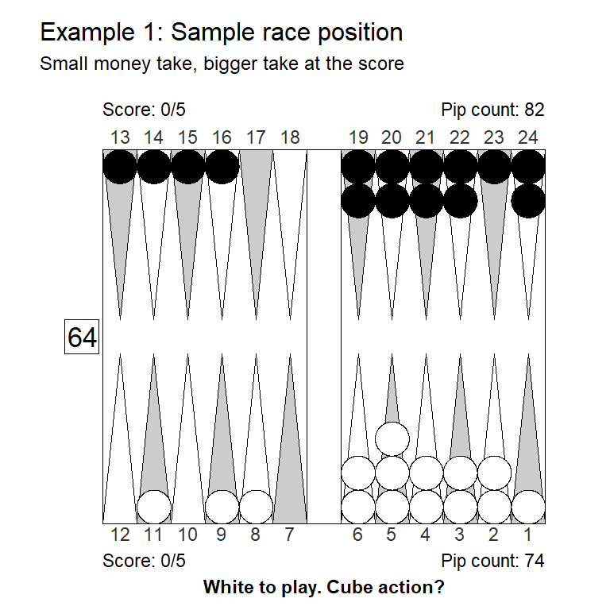
Money game, cubeful equities:
No double: +0,838 (-0,144)
Double/Take: +0,983
Double/Pass: +1,000 (+0,017)
5-away, 5-away, cubeful equities:
No double: +0,817 (-0,093)
Double/Take: +0,910
Double/Pass: +1,000 (+0,090)The rollout confirms that this race is indeed a bigger take at the score, as we would expect from the slightly lower take point.
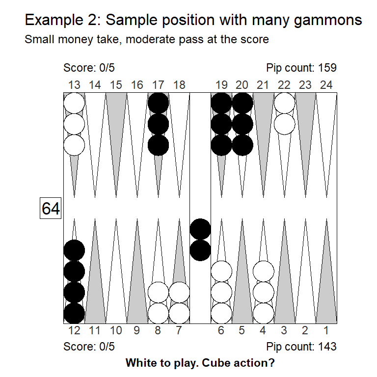
Money game, cubeful equities:
No double: +0,843 (-0,152)
Double/Take: +0,995
Double/Pass: +1,000 (+0,005)
5-away, 5-away, cubeful equities:
No double: +0,856 (-0,144)
Double/Take: +1,096 (+0,096)
Double/Pass: +1,000Again, the rollout shows that the blitz position, which was a marginal take for money, is a pass at the score, due to the slightly higher take point.
Lee’s do the rest of the scores, using the same kind of table for displaying take poins and how much they differ for money, but fresh example positions.
4-away, 5-away
| Position type | Take point, match | Take point, money | Difference |
|---|---|---|---|
| Last roll | 0.227 | 0.250 | -0.023 |
| Race | 0.188 | 0.214 | -0.026 |
| A little gammon | 0.265 | 0.261 | 0.004 |
| Some gammons | 0.305 | 0.291 | 0.014 |
| Many gammons | 0.359 | 0.335 | 0.025 |
Observations:
Winning two points and getting to 2-away is valuable, so take point is lower that for money in last-roll or race positions.
Losing a gammon hurts extra, so take points rise as the opponents gammon threat rises.
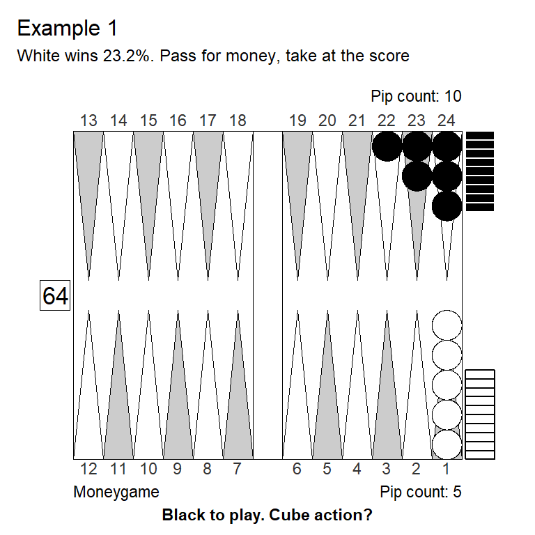
Money game, Cubeful Equities:
No double: +0,745 (-0,255)
Double/Take: +1,064 (+0,064)
Double/Pass: +1,000
4-away, 5-away, Cubeful Equities:
No double: +0,745 (-0,225)
Double/Take: +0,970
Double/Pass: +1,000 (+0,030)This is slightly better that a pure 3-roll position (that yields 21.2% winning chances) because Black is not gin after 22 and 11. Still a moderate pass for money, but a small take at the score.
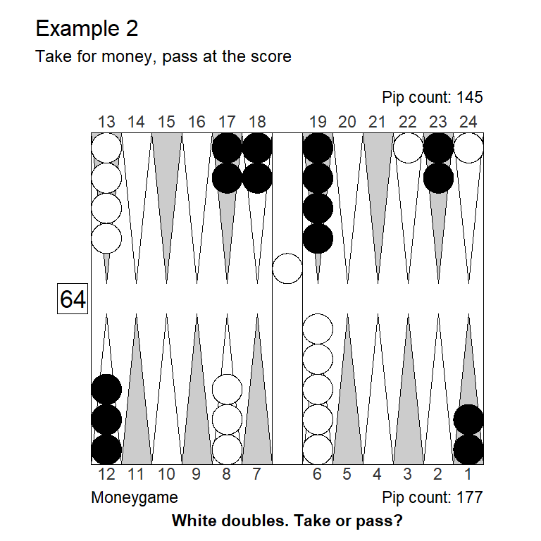
Money game, Cubeful Equities:
No double: +0,784 (-0,171)
Double/Take: +0,955
Double/Pass: +1,000 (+0,045)
4-away, 5-away, Cubeful Equities:
No double: +0,801 (-0,199)
Double/Take: +1,138 (+0,138)
Double/Pass: +1,000Facing a very clear gammon threat, White has a big pass at the score, even though this is a moderate take for money.
3-away, 5-away
| Position type | Take point, match | Take point, money | Difference |
|---|---|---|---|
| Last roll | 0.209 | 0.250 | -0.041 |
| Race | 0.187 | 0.214 | -0.027 |
| A little gammon | 0.275 | 0.261 | 0.014 |
| Some gammons | 0.320 | 0.291 | 0.029 |
| Many gammons | 0.379 | 0.335 | 0.044 |
Observations:
Winning 2 points is very valuable when 3-away; it gets you to the Crawford game. Therefore, take points in last-roll and race positions are low.
Recube vig is low, however, so the difference from money is most pronounced is pure last-roll positions where the cube is dead anyway.
Gammons are dangerous, so cation is required more and more as the likelihood of losing a gammon increases.

Money game, Cubeful Equities:
No double: +0,886 (-0,114)
Double/Take: +1,095 (+0,095)
Double/Pass: +1,000
3-away, 5-away, Cubeful Equities:
No double: +0,845 (-0,128)
Double/Take: +0,972
Double/Pass: +1,000 (+0,028)Down 7 pips, 42 vs. 35, is a lot, even if Black has more vastage. But a bare take when you need three points to win.
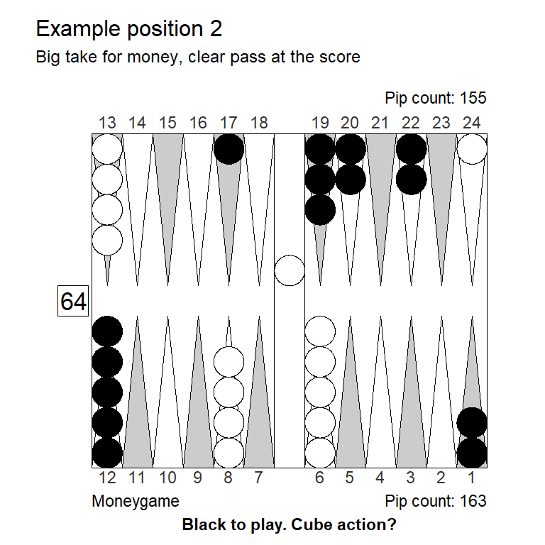
Money game, Cubeful Equities:
No double: +0,761 (-0,070)
Double/Take: +0,832
Double/Pass: +1,000 (+0,168)
3-away, 5-away, Cubeful Equities:
No double: +0,895 (-0,105)
Double/Take: +1,088 (+0,088)
Double/Pass: +1,000Gammons changes the matter. To illustrate, this table of gammon values shows how much doubling decreases gammon values for the leader and increases gammon values for the trailer, leading to higher take points for the leader whenever gammons are at play.
| Cube value | Gammon value, 3-away | Gammon value, 5-away |
|---|---|---|
| 1 | 0.57 | 0.42 |
| 2 | 0.46 | 0.73 |
2-away, 5-away
| Position type | Take point, match | Take point, money | Difference |
|---|---|---|---|
| Last roll | 0.173 | 0.250 | -0.077 |
| Race | 0.173 | 0.214 | -0.041 |
| A little gammon | 0.279 | 0.261 | 0.018 |
| Some gammons | 0.332 | 0.291 | 0.041 |
| Many gammons | 0.400 | 0.335 | 0.066 |
Observations:
- Same pattern as in 4-away, 5-away and in 3-away, 5-away, but even more pronounced: White takes more in races, considerable less in gammonish positions.
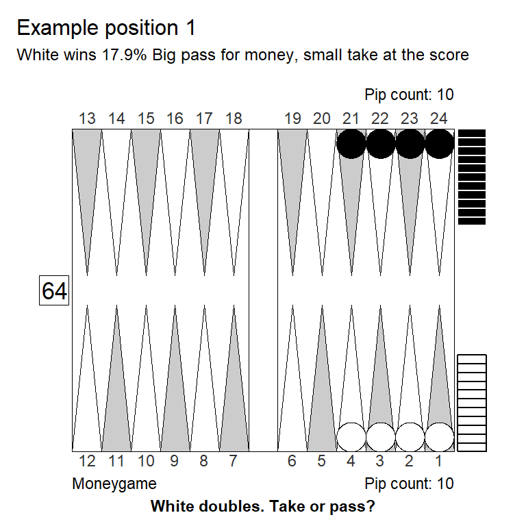
Money game, Cubeful Equities:
No double: +0,748 (-0,252)
Double/Take: +1,251 (+0,251)
Double/Pass: +1,000
2-away, 5-away, Cubeful Equities:
No double: +0,689 (-0,283)
Double/Take: +0,972
Double/Pass: +1,000 (+0,028)Even in a slightly desperate close-to-last-roll situation White can find a take when two points wins exactly.
Money game, Cubeful Equities:
No double: +0,602 (-0,135)
Double/Take: +0,736
Double/Pass: +1,000 (+0,264)
2-away, 5-away, Cubeful Equities:
No double: +0,664 (-0,336)
Double/Take: +1,170 (+0,170)
Double/Pass: +1,000This is a bit scary since White can easily get closed out and gammoned. Still only 11 rolls cover the 4-point blot, and on the remaining 25 rolls White will have plenty of play if he just enters. Even after Blacks 7 rolls with hitting 3’s (43 and 63 don’t hit), entering gives White counter play. Easy take for money. At 2-away, 5-away it is a big pass, however.
5-away, 4-away
| Position type | Take point, match | Take point, money | Difference |
|---|---|---|---|
| Last roll | 0.304 | 0.250 | 0.054 |
| Race | 0.243 | 0.214 | 0.029 |
| A little gammon | 0.301 | 0.261 | 0.039 |
| Some gammons | 0.333 | 0.291 | 0.042 |
| Many gammons | 0.380 | 0.335 | 0.045 |
Observations:
As opposed to the reverse score, 4-away, 5-away, the potential two points at stake now benefits the doubling player more, so the trailer faces higher take points no matter the type of position.
This is because both a two-point win and a four-point gammon win is particular valuable to the leader.
Money game, Cubeful Equities:
No double: +0,475 (-0,475)
Double/Take: +0,951
Double/Pass: +1,000 (+0,049)
5-away, 4-away, Cubeful Equities:
No double: +0,505 (-0,495)
Double/Take: +1,110 (+0,110)
Double/Pass: +1,000Standard take for money, even with just \(\frac{10}{36}\times\frac{26}{36}\approx 0.201\) winning probability since White has a strong recube on Blacks misses.
At the score recubes are even stronger: Black will need 0.298 to take the recube so must pass in case of a miss. That means Whites chances are effectively \(\frac{10}{36}\approx 0.278\) – but still falling short of the 0.304 last-roll take point. `
The two points Black threatens to win are so valuable, that White has a clear pass.
Money game, Cubeful Equities:
No double: +0,866 (-0,008)
Double/Take: +0,874
Double/Pass: +1,000 (+0,126)
5-away, 4-away, Cubeful Equities:
No double: +0,912 (-0,088)
Double/Take: +1,058 (+0,058)
Double/Pass: +1,000Even this contact position with a position advantage but no particular gammon threat, is a small pass at the score, despite being only a very small double for money.
5-away, 3-away
| Position type | Take point, match | Take point, money | Difference |
|---|---|---|---|
| Last roll | 0.287 | 0.250 | 0.037 |
| Race | 0.223 | 0.214 | 0.009 |
| A little gammon | 0.250 | 0.261 | -0.011 |
| Some gammons | 0.270 | 0.291 | -0.021 |
| Many gammons | 0.301 | 0.335 | -0.034 |
Observations:
In a last roll position White still has a high take point at 0.287, because two points are very valuable for Black – getting him to the Crawford game
The race is different, because White now has a lot of cube leverage: White now has almost the same take point as for money.
Like we saw at 3-away, 5-away, the effect of gammons is to lower the take point for the trailer. This is because after double/take the gammon value decreases for the leader, and increases for the trailer.
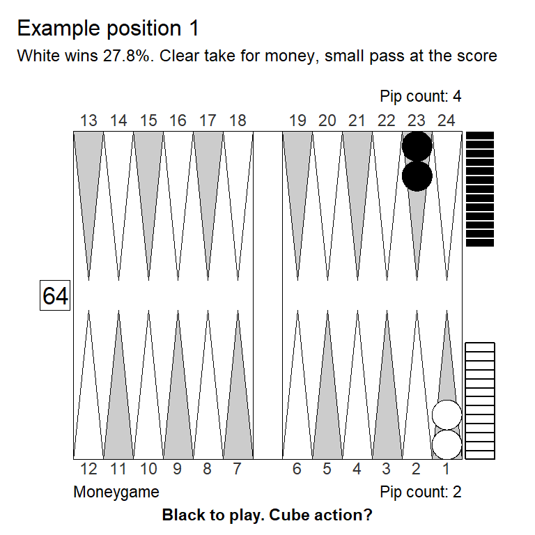
Money game, Cubeful Equities:
No double: +0,444 (-0,444)
Double/Take: +0,889
Double/Pass: +1,000 (+0,111)
5-away, 3-away, Cubeful Equities:
No double: +0,444 (-0,556)
Double/Take: +1,038 (+0,038)
Double/Pass: +1,000With no recube vig and no gammons, White has a high take point, turning this last-roll position from a clear money take to a small pass.
Money game, Cubeful Equities:
No double: +0,840 (-0,143)
Double/Take: +0,983
Double/Pass: +1,000 (+0,017)
5-away, 3-away, Cubeful Equities:
No double: +0,846 (-0,154)
Double/Take: +1,000
Double/Pass: +1,000 (+0,000)In our sample race position cube action is very similar for money and at the score: Whites extra recube vig offsets the higher take point to begin with.
Money game, Cubeful Equities:
No double: +0,818 (-0,182)
Double/Take: +1,062 (+0,062)
Double/Pass: +1,000
5-away, 3-away, Cubeful Equities:
No double: +0,716
Double/Take: +0,699 (-0,017)
Double/Pass: +1,000 (+0,284)
1296 Games rolled with Variance Reduction.
Moves: 3-ply, cube decisions: XG RollerTypical blitz position, a pass for money, turns into a big take, mainly because of changes in gammon values. It’s not just the cube leverage that makes the difference, because as we saw above, a race recube would have a take point for Black not too different from money game.
Gammon values, as we also saw earlier:
| Cube value | Gammon value, 5-away | Gammon value, 3-away |
|---|---|---|
| 1 | 0.42 | 0.57 |
| 2 | 0.73 | 0.46 |
5-away, 2-away
| Position type | Take point, match | Take point, money | Difference |
|---|---|---|---|
| Last roll | 0.395 | 0.250 | 0.145 |
| Race | 0.234 | 0.214 | 0.019 |
| A little gammon | 0.216 | 0.261 | -0.045 |
| Some gammons | 0.212 | 0.291 | -0.079 |
| Many gammons | 0.210 | 0.335 | -0.125 |
Observations:
Without recubes, the trailer’s take point is extremely high: a full 0.395.
Of course the one-sided benefit from automatic recube makes a big difference, but, perhaps surprisingly, still leaves the trailer with a slightly higher racing game take point than for money.
Gammons don’t hurt the trailer after a take; naturally this allows for much more liberal takes compared to money game.
Money game, Cubeful Equities:
No double: +0,336 (-0,246)
Double/Take: +0,582
Double/Pass: +1,000 (+0,418)
5-away, 2-away, Cubeful Equities:
No double: +0,348 (-0,652)
Double/Take: +1,081 (+0,081)
Double/Pass: +1,000If White takes and Black misses, Black will pass the automatic redouble, so that doesn’t benefit White much, leaving him with a very high take point and a pass here, even though for money the take is trivial.
Money game, Cubeful Equities:
No double: +0,965 (-0,035)
Double/Take: +1,235 (+0,235)
Double/Pass: +1,000
5-away, 2-away, Cubeful Equities:
No double: +0,890 (-0,110)
Double/Take: +1,002 (+0,002)
Double/Pass: +1,000White wins about 22%, so big pass for money, due to some gammon losses. At 5-away, 2-away after double/take/redouble gammons don’t hurt, and White can win four points, Black only two. Intuitively this would lower White’s take point by a lot. But the cube is dead which pulls in the opposite direction, and Black’s two points are worth a lot. As we saw above, in a straight race White would need 23% to take which is only a bit less than the comparable 25% White would need to take for money with a dead cube.
Bottom line: White has a marginal take/pass decision. 22% is about what he needs, the occasional freak gammon win (probability about 3%) accounts for the difference from the mentioned 23% racing game dead cube take point.
4-away scores
4-away, 4-away
| Position type | Take point, match | Take point, money | Difference |
|---|---|---|---|
| Last roll | 0.288 | 0.250 | 0.038 |
| Race | 0.224 | 0.214 | 0.010 |
| A little gammon | 0.299 | 0.261 | 0.038 |
| Some gammons | 0.338 | 0.291 | 0.047 |
| Many gammons | 0.392 | 0.335 | 0.057 |
Observations:
Here all take points are higher than for money. This is because both a two-point and a four-point win is particular valuable. Doubling, in effect, more than doubles the stakes.
This also makes future redoubles more potent, which is why the smallest difference from money is in straight races: The taker gets powerful recubes but does not need to fear expensive gammon losses.
Money game, Cubeful Equities:
No double: +0,591
Double/Take: +0,547 (-0,044)
Double/Pass: +1,000 (+0,409)
4-away, 4-away, Cubeful Equities:
No double: +0,682 (-0,135)
Double/Take: +0,817
Double/Pass: +1,000 (+0,183)This is one of the weaker variations on an opening 55 blitz: 65 followed by 55. Not quite a double for money, but a strong double at the score. White has a fine take though; the score calls for caution, not panic.
Money game, Cubeful Equities:
No double: +0,563 (-0,145)
Double/Take: +0,707
Double/Pass: +1,000 (+0,293)
4-away, 4-away, Cubeful Equities:
No double: +0,630 (-0,370)
Double/Take: +1,079 (+0,079)
Double/Pass: +1,000Highly volatile position, which makes for a good double for money, but clear take. White could get gammoned (about 26% of the time) but also wins 35% of the games. At the score, this is too much, White has a moderate pass.
3-away, 4-away
| Position type | Take point, match | Take point, money | Difference |
|---|---|---|---|
| Last roll | 0.240 | 0.250 | -0.010 |
| Race | 0.211 | 0.214 | -0.004 |
| A little gammon | 0.312 | 0.261 | 0.051 |
| Some gammons | 0.361 | 0.291 | 0.070 |
| Many gammons | 0.426 | 0.335 | 0.091 |
Observations:
Here, the two points are more valuable for the leader than the trailer, so the ‘raw’ take point (cubeless, gammonless) is slightly lower than for money.
Gammons are very dangerous, of course.
Money game, Cubeful Equities:
No double: +0,591
Double/Take: +0,547 (-0,044)
Double/Pass: +1,000 (+0,409)
3-away, 4-away, Cubeful Equities:
No double: +0,819 (-0,181)
Double/Take: +1,139 (+0,139)
Double/Pass: +1,000Our 65-55-opening blitz from before (small no double for money), is now a clear pass. The combination of a lethal gammon threat and limited recube potential is just too much.
Money game, Cubeful Equities:
No double: +0,877 (-0,046)
Double/Take: +0,923
Double/Pass: +1,000 (+0,077)
3-away, 4-away, Cubeful Equities:
No double: +0,975 (-0,025)
Double/Take: +1,436 (+0,436)
Double/Pass: +1,000Sound money double in this artificial position, based on big positional advantage (not on volatility). The combinations of gammon threat and low cube value makes this a huge pass at the score.
2-away, 4-away
| Position type | Take point, match | Take point, money | Difference |
|---|---|---|---|
| Last roll | 0.199 | 0.250 | -0.051 |
| Race | 0.199 | 0.214 | -0.015 |
| A little gammon | 0.333 | 0.261 | 0.072 |
| Some gammons | 0.396 | 0.291 | 0.105 |
| Many gammons | 0.477 | 0.335 | 0.142 |
Observations:
- Same pattern as for 4-away, 4-away, and for 3-away, 4-away, but a lot stronger: It’s relatively easy to take in no-gammon situations; very hard when a significant gammon threat exists.
Money game, Cubeful Equities:
No double: +0,681 (-0,319)
Double/Take: +1,119 (+0,119)
Double/Pass: +1,000
2-away, 4-away, Cubeful Equities:
No double: +0,656 (-0,298)
Double/Take: +0,954
Double/Pass: +1,000 (+0,046)This 21% position is a fine take when we need only 20% to take.
Money game, Cubeful Equities:
No double: +0,405
Double/Take: +0,258 (-0,147)
Double/Pass: +1,000 (+0,595)
2-away, 4-away, Cubeful Equities:
No double: +0,800 (-0,184)
Double/Take: +0,984
Double/Pass: +1,000 (+0,016)The slightest smell of blitz, makes for at best a marginal take at 4-away, 2-away.
4-away, 3-away
| Position type | Take point, match | Take point, money | Difference |
|---|---|---|---|
| Last roll | 0.352 | 0.250 | 0.102 |
| Race | 0.258 | 0.214 | 0.044 |
| A little gammon | 0.279 | 0.261 | 0.018 |
| Some gammons | 0.297 | 0.291 | 0.006 |
| Many gammons | 0.325 | 0.335 | -0.010 |
Observations:
- Even trailing, it’s somewhat difficult to find a take at this score – except when gammons are clearly visible.
Money game, Cubeful Equities:
No double: +0,711 (-0,026)
Double/Take: +0,737
Double/Pass: +1,000 (+0,263)
4-away, 3-away, Cubeful Equities:
No double: +0,918 (-0,082)
Double/Take: +1,129 (+0,129)
Double/Pass: +1,000A five-roll position is a solid pass at the score.
Money game, Cubeful Equities:
No double: +0,879 (-0,083)
Double/Take: +0,962
Double/Pass: +1,000 (+0,038)
4-away, 3-away, Cubeful Equities:
No double: +0,839 (-0,049)
Double/Take: +0,887
Double/Pass: +1,000 (+0,113)Solid positional advantage, gammons clearly a relevant consideration, so small money take becomes a clear take at 4-away, 3-away.
4-away, 2-away
| Position type | Take point, match | Take point, money | Difference |
|---|---|---|---|
| Last roll | 0.371 | 0.250 | 0.121 |
| Race | 0.186 | 0.214 | -0.029 |
| A little gammon | 0.186 | 0.261 | -0.075 |
| Some gammons | 0.186 | 0.291 | -0.105 |
| Many gammons | 0.186 | 0.335 | -0.149 |
Observations:
With the perfect automatic recube available the trailer can of course take with 19% – the winning chance we get when passing for 4-away, 1-away, Crawford.
The last-roll situation, where we don’t get to the automatic recube, is a trap; here the take point is a very high 37%

Money game, Cubeful Equities:
No double: +0,517 (-0,460)
Double/Take: +0,976
Double/Pass: +1,000 (+0,024)
4-away, 3-away Cubeful Equities:
No double: +0,654 (-0,346)
Double/Take: +1,010 (+0,010)
Double/Pass: +1,000If Black misses, 12/36, he will pass the automatic recube, so White really wins 1/3 plus about 3% after getting hit, roughly 35% in total, which is just a bit short of a take. For money, the problem is that White can lose a gammon after getting hit, but he is getting better odds on the take, and so bottomline is a small take.
So a close take/pass decision both at 4-away, 2-away and money, but for different reasons.
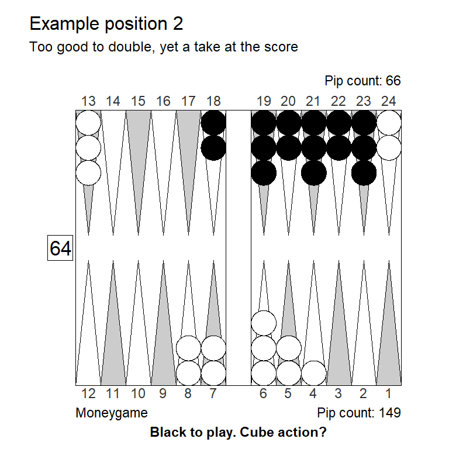
Money game, Cubeful Equities:
No double: +1,072
Double/Take: +1,847 (+0,775)
Double/Pass: +1,000 (-0,072)
4-away, 2-away, Cubeful Equities:
No double: +1,062
Double/Take: +0,758 (-0,303)
Double/Pass: +1,000 (-0,062)Another tricky one: Clearly a gigantic pass for money, moderately too good to double. At the score Black also should play for the gammon which seems quite intuitive. But if doubled, White has a moderate take, because of the low take point. In that sense, the position is both too good and not good enough: If Black doubles he is worse off whether White passes or takes.
3-away scores
3-away, 3-away
| Position type | Take point, match | Take point, money | Difference |
|---|---|---|---|
| Last roll | 0.302 | 0.250 | 0.052 |
| Race | 0.252 | 0.214 | 0.037 |
| A little gammon | 0.296 | 0.261 | 0.035 |
| Some gammons | 0.322 | 0.291 | 0.031 |
| Many gammons | 0.361 | 0.335 | 0.026 |
Observations:
At 3-away, 3-away it is harder to find a take in all position types.
On one hand, two points are very valuable – the double more than doubles the stakes – so in the last-roll starting point the take point is quite a bit higher than for money.
On the other hand, the cube leverage is a little better than for money, so some of the difference disappears when we allow for redoubles.
Also note that the gammon value before doubling is very high, after double/take the gammon value is similar to money game:
| Cube value | Gammon value, 3-away |
|---|---|
| 1 | 0.76 |
| 2 | 0.50 |
Money game, Cubeful Equities:
No double: +0,802 (-0,082)
Double/Take: +0,883
Double/Pass: +1,000 (+0,117)
3-away, 3-away, Cubeful Equities:
No double: +0,865 (-0,135)
Double/Take: +1,052 (+0,052)
Double/Pass: +1,000Black leads in every area, including the important race, so solid double/take for money. But 3-away, 3-away pushes this into double/pass territory.
Money game, Cubeful Equities:
No double: +0,881 (-0,072)
Double/Take: +0,953
Double/Pass: +1,000 (+0,047)
3,away,3-away, Cubeful Equities:
No double: +0,975 (-0,025)
Double/Take: +1,171 (+0,171)
Double/Pass: +1,000
1296 Games rolled with Variance Reduction.
Moves: 3-ply, cube decisions: XG RollerA pretty standard holding game, take for money, becomes a big pass at 3-away, 3-away.
(Note that this is rolled out, instead of using XG++ like we did most other places. Even the truncated rollout in XG++ overestimates holding games.)
2-away, 3-away
| Position type | Take point, match | Take point, money | Difference |
|---|---|---|---|
| Last roll | 0.262 | 0.250 | 0.012 |
| Race | 0.262 | 0.214 | 0.048 |
| A little gammon | 0.326 | 0.261 | 0.065 |
| Some gammons | 0.361 | 0.291 | 0.070 |
| Many gammons | 0.411 | 0.335 | 0.076 |
Observations:
Every type of position is a bit harder to take here than for money, although the difference is less pronounced in last-roll positions where White wouldn’t have had the benefit of potential redoubles anyway.
Of course, especially when the trailer has a gammon threat, the leader should be reluctant to take.
Money game, Cubeful Equities:
No double: +0,764 (-0,141)
Double/Take: +0,906
Double/Pass: +1,000 (+0,094)
2-away, 3-away, Cubeful Equities:
No double: +0,767 (-0,233)
Double/Take: +1,037 (+0,037)
Double/Pass: +1,000In this 4-roll position 11 doesn’t necessarily save a roll for White, so White is a bit worse off compared to a pure 4-roll position. Enough to turn a money take into a pass at the score.
Money game, Cubeful Equities:
No double: +0,784 (-0,171)
Double/Take: +0,955
Double/Pass: +1,000 (+0,045)
2-away, 3-away, Cubeful Equities:
No double: +1,030
Double/Take: +1,451 (+0,421)
Double/Pass: +1,000 (-0,030) When Black has a match winning gammon threat, this small money take becomes a gigantic pass at 2-away, 3-away
3-away, 2-away
| Position type | Take point, match | Take point, money | Difference |
|---|---|---|---|
| Last roll | 0.368 | 0.250 | 0.118 |
| Race | 0.249 | 0.214 | 0.035 |
| A little gammon | 0.249 | 0.261 | -0.012 |
| Some gammons | 0.249 | 0.291 | -0.042 |
| Many gammons | 0.249 | 0.335 | -0.085 |
Observations:
Naturally, the trailer can take (and redouble) with anything better than the 24.9% he would have had after passing and getting to 3-away, 1-away, Crawford.
Beware the last-roll situation, however: When the leader could win exactly 2-point (and not risk losing 3 or 4 point) that is dangerous.
Money game, Cubeful Equities:
No double: +0,278 (-0,278)
Double/Take: +0,556
Double/Pass: +1,000 (+0,444)
3-away, 2-away, Cubeful Equities:
No double: +0,278 (-0,722)
Double/Take: +1,037 (+0,037)
Double/Pass: +1,000Even with 36.1% winning chances White can’t quite take at the score with no automatic recube available; he needs 36.8%.
Money game, Cubeful Equities:
No double: +0,764 (-0,141)
Double/Take: +0,906
Double/Pass: +1,000 (+0,094)
3-away, 2-away, Cubeful Equities:
No double: +0,766 (-0,188)
Double/Take: +0,954
Double/Pass: +1,000 (+0,046)The same near-four-roll position as shown to be a pass at 2-away, 3-away. A smallish take at this score.
The funny two-point match
The two-point match is funny: It’s a well-known fact that an optimal strategy is to double at first opportunity, at which point the opponent will always have a clear take, with the take point being 32%.
However, in practice, if you delay doubling until you have at least one market losing sequence, you might gain a bit from either:
- The opponent doubling too late and loosing their market
- The opponent passing a less obvious take
On the flip side, delaying doubling may cost you if:
- You accidentally lose your market by overlooking something
- You end up passing what is really a take.
For example, let’s say the opponent opens with 31. Should you double, knowing there’s zero chance he will pass? The best possible sequence is that you roll 66 and he rolls 61, which will still leave him with more than 40% winning chances and a very clear take. Still, the take is less clear than before, so perhaps there’s someone out there that will pass.
In practical play, it would be better to roll in response to an opening 31, since it can’t hurt and it opens the possibility of harvesting a mistake the opponent might make.
Suppose it is you who opens the game with 31, an he rolls 52, splitting. Now you do have market losers: Mostly involving you rolling 33, 55, or 66 and him responding poorly. Against any particular opponent it might still be the best play to hold off, but that depends on exactly how likely you are to lose your market (and by how much), and exactly how more likely the opponent is to make a future mistake, compare to yourself. That’s extremely hard to judge, so the best practical play against reasonably competent opposition, is probably to double.
Post-crawford
1-away, even-away
When you are leading post-crawford, with the opponent being either 2-away or 4-away, you have a ‘free drop’. At 1-away, 2-away you can pass and get to double match point for 50% winning chances, so you need to have better than that to take.
In general, you pass if you win the opening with one of the poorer rolls: 51, 52, or 43. Naturally you pass most of the time when the opponents win the opening roll – unless you respond strong, for example by hitting.
At 1-away, 4-away you can take slightly more, the idea being of ‘saving’ the free drop for later, if you lose a single game and get to 1-away, 2-away, where you might need the free pass even more – like if the opponent opens with 31 and you don’t roll a good double (11, 33, 66 will do the trick) in return.
A good benchmark: If you open with 41, played 13/9, 24/23, you should pass at 1-away, 2-away, but take at 1-away, 4-away.
Even-away, 1-away
When trailing 2-away or 4-away, of course you double right away. If you have no market losers that would make you a favorite, you could delay doubling, hoping to double and induce a wrong pass if you become a near-favorite. But this won’t really work: You would need a position good enough so that becoming a near-favorite is possible, but becoming an actual favorite is not possible. Even after a sequence like 54 (split), 44 (point-on-head) you could roll a joker like 11 from the bar, potentially losing your market.
1-away, odd-away
At 1-away, 3-away or 1-away, 5-away, you have a ‘free take’. How free is ‘free’?
If, at 1-away, 3-away, you pass you get to 1-away, 2-away were you have the benefit of a free drop, making your match winning chances slightly above even-money: 51.2%. By taking and losing you get to DMP for 50%, so the loss is just 1.2%. The gain from taking and winning is 48.8%, making the take point:
\(Take\ point = \frac{loss}{loss+gain} = \frac{1.2}{1.2 + 48.8} = 2.4\)%
At 1-away, 5-away, the corresponding numbers would look like this:
\(Take\ point = \frac{loss}{loss+gain} = \frac{1.3}{1.3 + 32.3} = 3.9\)%
So the take is indeed almost free – unless we can lose a gammon. Gammons are expensive, with a value of 1.0 after double/take at 1-away, 3-away, and 0.55 at 1-away, 3-away. This means that in the worst case (opponent 3-away) we can take when our gammon chances are no less than our winning chances.
When opponent is 5-away gammons are not nearly as costly, so they need to be roughly double our winning chances for us to pass.
For example, suppose we open with one of the worst possible sequences: 52 (split), then the opponent fails to double, rolls 55 (double hit), then we dance with both checkers with 66. Now we have roughly 30% chances of winning but 40% chanches of getting gammoned.
That is a big pass at 1-away, 3-away, and a big take at 1-away, 5-away.
So practically speaking: When we have a free take available we take almost everything, except when being blitzed real badly.
Odd-away, 1-away
The above analysis also means that when trailing, and the opponent have a free take, we can delay doubling with little risk, as long as we’re not really threatening to win a gammon.
For example, suppose we’re trailing 3-away post-crawford, and the opponent opens with 21: 13/11 6/5. We could double, expecting an automatic take (hoping for an enormous bonus if the opponent mistakes the free take for a free drop).
Or we could roll, hoping for something like 64 (double hit), 66 (double dance), in which case the opponent will still have a clear take (winning about 37%, lossing a gammon about 27% of the time) – but might also have a lot harder decision with more room for mistaking an easy take for a drop.
The practical advice would be to double anything that looks like a blitz, and wait with anything that does not.
Recubes
5-away, 5-away
| Position type | Take point, match | Take point, money | Difference |
|---|---|---|---|
| Last roll | 0.284 | 0.250 | 0.034 |
| Race | 0.254 | 0.214 | 0.039 |
| A little gammon | 0.278 | 0.261 | 0.017 |
| Some gammons | 0.294 | 0.291 | 0.003 |
| Many gammons | 0.318 | 0.335 | -0.016 |
Observations:
- At 5-away, 5-away it is little harder to find a take for a recube in positions without too many gammons, because the extra two points are particular valuable.
- When gammons are likely, this effect is reduced, or even reversed, because after double/take the gammon drops low:
| Cube value | Gammon value, 5-away |
|---|---|
| 2 | 0.66 |
| 4 | 0.23 |
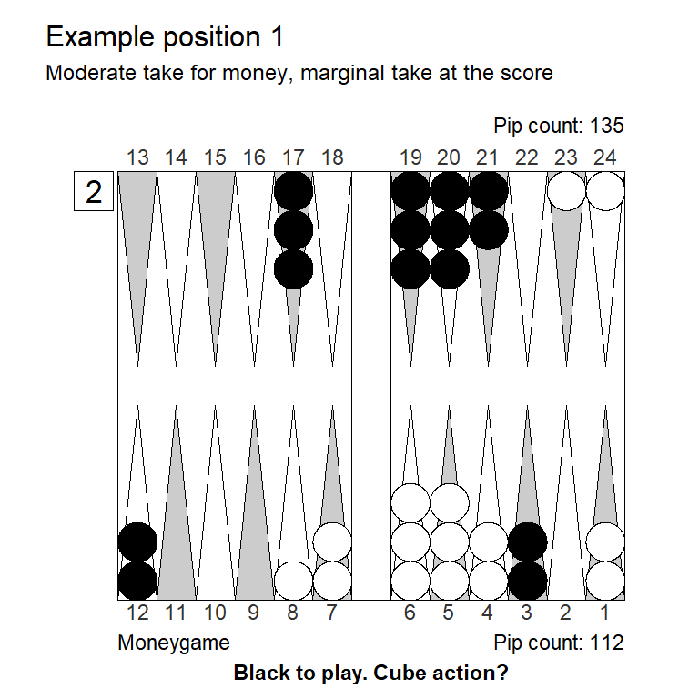
Money game, Cubeful Equities:
No redouble: +0,819 (-0,111)
Redouble/Take: +0,931
Redouble/Pass: +1,000 (+0,069)
5-away, 5-away, Cubeful Equities:
No redouble: +0,859 (-0,137)
Redouble/Take: +0,996
Redouble/Pass: +1,000 (+0,004)Case in point: A position with strong boards and some gammon potential for both sides, but not enough to reverse the small tendency to drop at the score: White has enough for a decent money-take for, but at best a very marginal take at the score.
It would take a truly gammonish position to make the underdog more inclined to take at the score, like our initial sample position for ‘many gammons’:
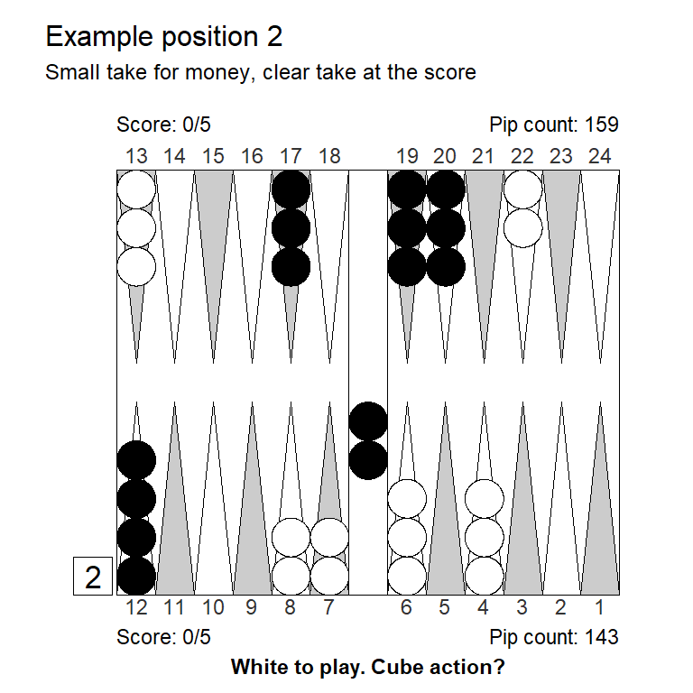
Money game, Cubeful Equities:
No redouble: +0,873 (-0,110)
Redouble/Take: +0,984
Redouble/Pass: +1,000 (+0,016)
5-away, 5-away, Cubeful Equities:
No redouble: +0,879 (-0,032)
Redouble/Take: +0,911
Redouble/Pass: +1,000 (+0,089)Ignoring that this position is too young to be a likely redouble, Black is more inclined to take at the score, than for money.
4-away, 5-away
| Position type | Take point, match | Take point, money | Difference |
|---|---|---|---|
| Last roll | 0.298 | 0.250 | 0.048 |
| Race | 0.298 | 0.214 | 0.084 |
| A little gammon | 0.329 | 0.261 | 0.068 |
| Some gammons | 0.347 | 0.291 | 0.056 |
| Many gammons | 0.374 | 0.335 | 0.039 |
Observations:
At 4-away, 5-away it is even harder for the leader to take a recube, and this holds across all position types, although the effect is smallest when a lot of gammons are in play.
The reason is of course, the the cube is now officially dead after redouble/take, and the gammon value drops all the way down to zero for the leader, but not quite as low for the trailer:
| Cube value | Gammon value, 4-away | Gammon value, 5-away |
|---|---|---|
| 2 | 0.81 | 0.77 |
| 4 | 0.00 | 0.23 |
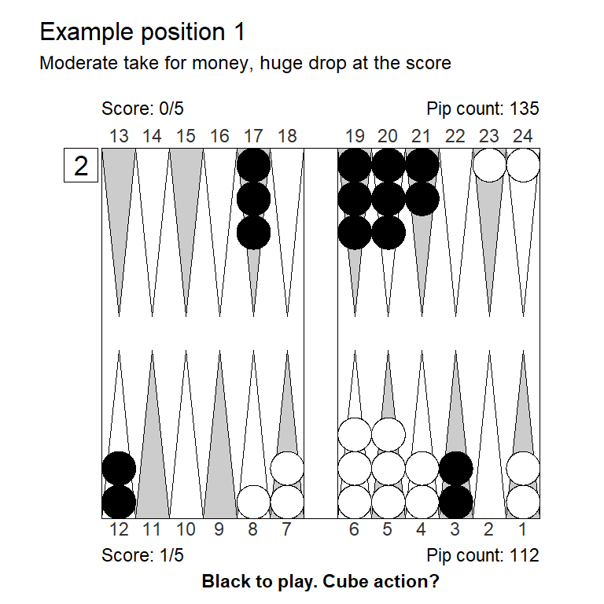
Money game, Cubeful Equities:
No redouble: +0,819 (-0,111)
Redouble/Take: +0,931
Redouble/Pass: +1,000 (+0,069)
4-away, 5-away, Cubeful Equities:
No redouble: +0,989 (-0,011)
Redouble/Take: +1,314 (+0,314)
Redouble/Pass: +1,000Example position 1, which was a marginal take at 5-away, 5-away, is now a huge drop.
3-away, 5-away
| Position type | Take point, match | Take point, money | Difference |
|---|---|---|---|
| Last roll | 0.334 | 0.250 | 0.084 |
| Race | 0.334 | 0.214 | 0.120 |
| A little gammon | 0.376 | 0.261 | 0.115 |
| Some gammons | 0.399 | 0.291 | 0.108 |
| Many gammons | 0.434 | 0.335 | 0.099 |
Observations:
Across all positions types it is much harder to take a redouble when leading 3-away, 5-away, compared to money.
This is one of the big reasons why it’s often a good idea to postpone the initial doubling a bit when leading 3-away, 5-away: It’s a powerful weapon you’re giving away.
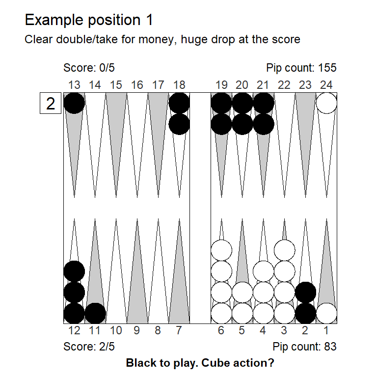
Money game, Cubeful Equities:
No redouble: +0,784 (-0,121)
Redouble/Take: +0,905
Redouble/Pass: +1,000 (+0,095)
3-away, 5-away, Cubeful Equities:
No redouble: +0,995 (-0,005)
Redouble/Take: +1,570 (+0,570)
Redouble/Pass: +1,000A pretty straight double/take for money, becomes a gigantic drop at the score.
5-away, 4-away
| Position type | Take point, match | Take point, money | Difference |
|---|---|---|---|
| Last roll | 0.315 | 0.250 | 0.065 |
| Race | 0.256 | 0.214 | 0.042 |
| A little gammon | 0.256 | 0.261 | -0.005 |
| Some gammons | 0.256 | 0.291 | -0.035 |
| Many gammons | 0.256 | 0.335 | -0.078 |
If White does not have an automatic recube available (as in a last-roll situation), he should be careful about taking a redouble at this score.
Even if the auto-redouble is available, it’s considerable harder to find a take in a race than for money.
Of course, after redouble/take/auto-redouble, it is double match point, so gammons are harmless – this could lead to takes that normally ‘look like’ big passes.
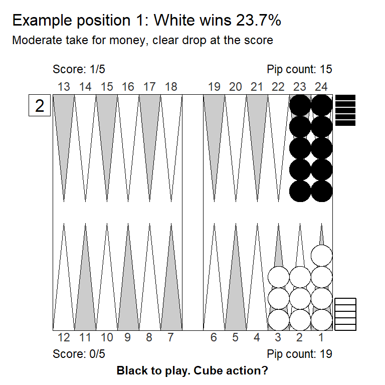
Money game, Cubeful Equities:
No redouble: +0,869 (-0,075)
Redouble/Take: +0,944
Redouble/Pass: +1,000 (+0,056)
5-away, 4-away, Cubeful Equities:
No redouble: +0,860 (-0,140)
Redouble/Take: +1,121 (+0,121)
Redouble/Pass: +1,000This is a 5-roll position with drawbacks: White can’t use 22 to save a roll and 11 is not fully effective. Those are quite expensive drawbacks, rather than 28% in in a pure 5-roll, white has only 24% here. Enought for a good money take, not enough at 5-away, 4-away, even taking into consideration the automatic recube.
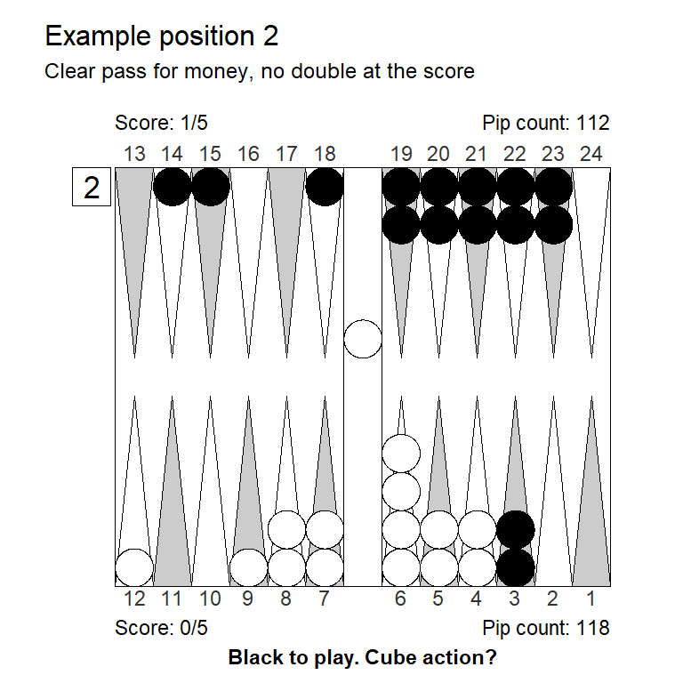
Money game, Cubeful Equities:
No redouble: +0,880 (-0,120)
Redouble/Take: +1,096 (+0,096)
Redouble/Pass: +1,000
5-away, 4-away, Cubeful Equities:
No redouble: +0,874
Redouble/Take: +0,436 (-0,438)
Redouble/Pass: +1,000 (+0,126)This looks scary for money, and it is indeed a pass. But of course the many gammons don’t matter after double/take/re-double, so White has a super easy take and Black is better off not doubling.
5-away, 3-away
| Position type | Take point, match | Take point, money | Difference |
|---|---|---|---|
| Last roll | 0.211 | 0.250 | -0.039 |
| Race | 0.158 | 0.214 | -0.056 |
| A little gammon | 0.158 | 0.261 | -0.103 |
| Some gammons | 0.158 | 0.291 | -0.133 |
| Many gammons | 0.158 | 0.335 | -0.176 |
A redouble here is of course for the match, so one needs only the same winning probability as when trailing 5-away, 1-away: 15.8%
Caveat is when you don’t get to redouble, as in a last-roll or virtually last roll situation. Then we need a good bit more – but still less than for money.
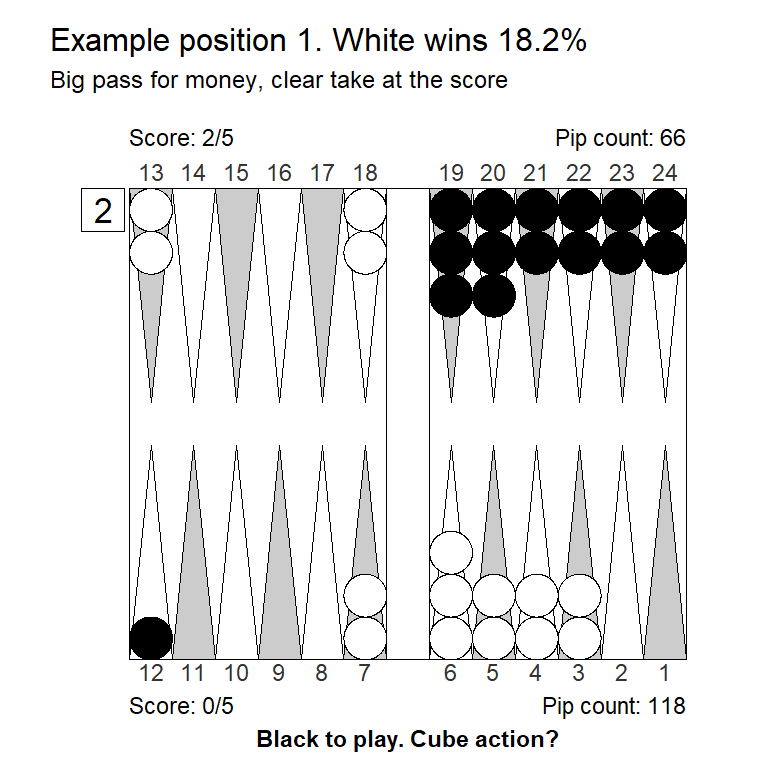
Money game, Cubeful Equities:
No redouble: +0,702 (-0,298)
Redouble/Take: +1,231 (+0,231)
Redouble/Pass: +1,000
5-away, 3-away, Cubeful Equities:
No redouble: +0,688 (-0,182)
Redouble/Take: +0,870
Redouble/Pass: +1,000 (+0,130)White can find the 15.8% he needs to take here.
The rare 8-cube
| Position type | Take point, match | Take point, money | Difference |
|---|---|---|---|
| Last roll | 0.158 | 0.250 | -0.092 |
| Race | 0.158 | 0.214 | -0.056 |
| A little gammon | 0.158 | 0.261 | -0.103 |
| Some gammons | 0.158 | 0.291 | -0.133 |
| Many gammons | 0.158 | 0.335 | -0.176 |
The non-automatic 8-cube arises only at 5-away, 5-away, so like before we have at take point at 15.8%. If gammons are likely this could lead to the unusual too-good-to-double-take situation. When this happens, the doubler is worse off doubling no matter if the opponent passes or takes.
Could look like this:
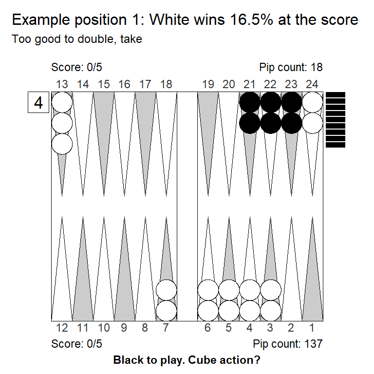
Money game, Cubeful Equities:
No redouble: +1,646
Redouble/Take: +3,054 (+1,409)
Redouble/Pass: +1,000 (-0,646)
5-away, 5-away, Cubeful Equities:
No redouble: +1,003
Redouble/Take: +0,981 (-0,022)
Redouble/Pass: +1,000 (-0,003)
1296 Games rolled with Variance Reduction.
Moves: 3-ply, cube decisions: XG RollerBlack is crazy too-good for money, but both too-good and not good enough at 5-away, 5-away holding a 4-cube.